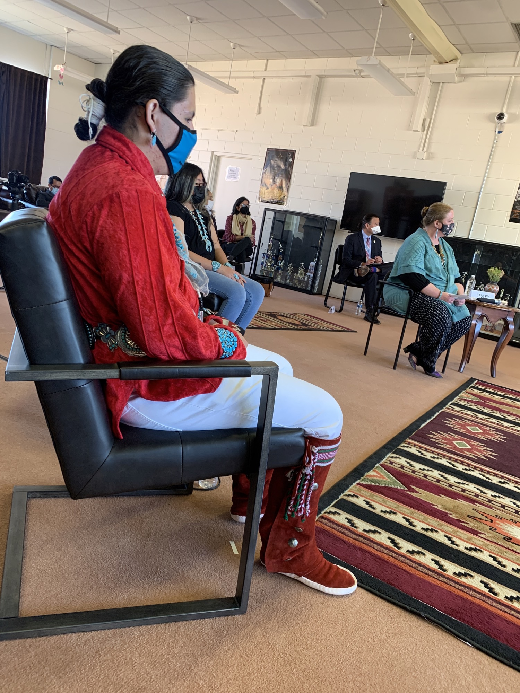

  <div> <div> <div>Pool is holding in a basketball gym, “Home of the Eagles” for approx an hour. A very good papier-mâché eagle hangs in a corner. The hallway is tiled in various shades of blue and there is a hand painted sign that says “welcome” surrounded by painted eagle feathers. Skies are blue with cumulus clouds. There is a little area outside for that looks like a garden with some beds for vegetables that doesn’t look tended. </div> <div><br> </div> <div>Some photos attached </div> <div><br> </div> <div> <div>Sent from my iPhone</div> <div>Jada Yuan</div> <div>Political Features Writer, <i>The Washington Post</i></div> <div>▊▊▊▊▊▊▊▊▊▊</div> <div>C: ▊▊▊▊▊▊▊▊▊▊</div> <div>Twitter: @jadabird</div> <div>IG: @alphajada</div> </div> </div> </div> 